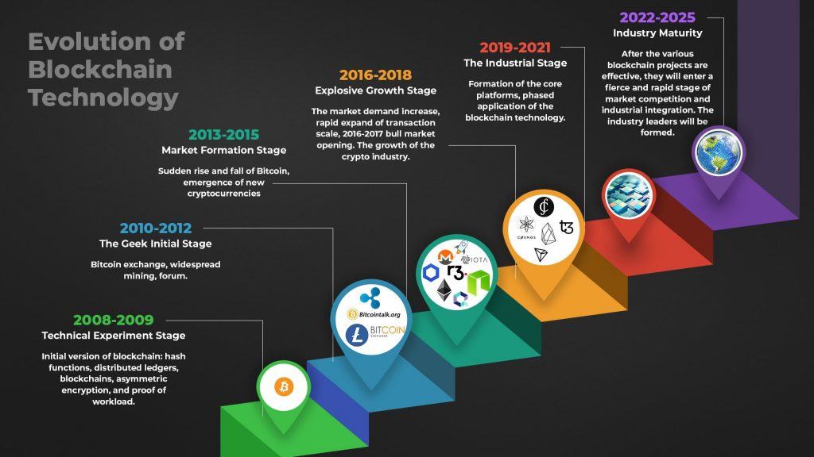

История блокчейна
История блокчейнаПроисхождение технологии: Bitcoin и Satoshi Nakamoto. Развитие блокчейн-технологий с 2008 года. Важные вехи в истории блокчейна
Переход от Bitcoin к Ethereum и другим платформамЭволюция блокчейн-технологий от первоначальной версии Bitcoin к более продвинутым платформам, таким как Ethereum и другие, позволила расширить возможности использования блокчейна. Влияние блокчейна на экономику и финансыБлокчейн оказывает значительное влияние на улучшение прозрачности, безопасности и эффективности финансовых систем, изменяя подходы к традиционным экономическим процессам. |
 |